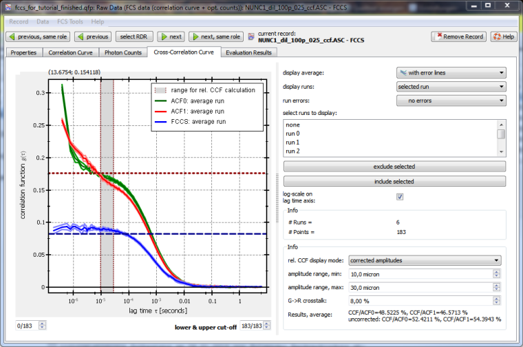

$$qf_commondoc_header.start$$ $$qf_commondoc_header.end$$
Raw Data Record User Interface
Tab "Correlation Curves"
In this tab you will see all correlation curves loaded into the current raw data record. On the rhs. you may choose how they are presented to you and see a list of all available runs. There are also buttons to exclude selected runs from the evaluation. These options are available:
- display average: select a display style for the average over all runs.
- display runs: choose how to display the different runs in the file
- no runs: displays only the average
- all runs: displays all runs in different colors
- all runs (highlighted): displays all runs in gray, and the selected runs in red
- used runs: displays only those runs that have not been excluded
- selected run: displays only the currently selected run
- run errors: plot styles for the errors
- select runs to display: a list of all runs in the file. Select a run for the "selected run"/"all runs (highlighted)" display modes or to exlude/include a run
- exclude/include run: excludes/includes the currently selected run ("select runs to display" list) from the evaluation. Note that the runs won't be deleted physically from the file, but will rather be marked as "do not use" in the project only. So the input data files are NEVER altered.
- log scale in lag time axis: draws the lag time axis in the plot logarithmically or linearly scaled.
- lower & upper cut-off Here you may cut some correlation channels (i.e. lag times $$math:\tau_i$$) to have a nicer display. This will have no effect in any other plugin in Quickfit and is used for improved local display only!
- Info: displays the number of runs and data points per run in the current raw data record
- Graph/Plot: For information on how to interact with the plot, please see the according online-help page.
- Also see the page "$$qf_ui_rdr_helpfiletitle$$" for futher information about UI elements common to all raw data records.
Tab "Photon Counts"
In this tab you will see all intensity time traces loaded into the current raw data record. On the rhs. you may choose how they are presented to you and see a list of all available runs. There are also buttons to exclude selected runs from the evaluation. These options are available:
- data display mode:
- binned or none: display the binned timetrace if available or none (does never display the full timetrace)
- binned or full: displays the binned timetrace of available or the full timetrace as a fallback
- full or binned: displays the full timetrace if available or the binned as a fallback
- none: displays no timetrace
- runs display mdoe: choose how to display the different runs in the file
- all runs: displays all runs in different colors
- all runs (highlighted): displays all runs in gray, and the selected runs in red
- used runs: displays only those runs that have not been excluded
- selected run: displays only the currently selected run
- select runs to display: a list of all runs in the file. Select a run for the "selected run"/"all runs (highlighted)" display modes or to exlude/include a run
- exclude/include run: excludes/includes the currently selected run ("select runs to display" list) from the evaluation. Note that the runs won't be deleted physically from the file, but will rather be marked as "do not use" in the project only. So the input data files are NEVER altered.
- display statistics: displays timetrace statistics (mean, std. deviation, min/max rate) as a table below the plot.
- display average in plot: shows average and standard deviation for every countrate curve as a line and translucent range
- include 0 on rate axis: autoscaling the y-axis always includes 0 counts
- overlay other count rates:overlays count rate curves from other loaded FCS files.
- lower & upper cut-off Here you may cut some correlation channels (i.e. lag times $$math:\tau_i$$) to have a nicer display. This will have no effect in any other plugin in Quickfit and is used for improved local display only!
- Info: displays the number of runs and data points per run in the current raw data record
- Graph/Plot: For information on how to interact with the plot, please see the according online-help page.
- Also see the page "$$qf_ui_rdr_helpfiletitle$$" for futher information about UI elements common to all raw data records.
Tab "Cross-Correlation Curve"
$$see:See the Tutorial on the FCCS overlay plots for details and a walk-through of this!$$
$$startbox_note$$For this function to work properly, you have to group all correlation functions (e.g. ACF0,ACF1,FCCS) from each measurement together. How to do this is described in this tutorial. Basically you have to use the tool "edit groups, roles and folders" in the main window (menu Tools | Project Tools).$$endbox$$
The tab Cross-Correlation Curve looks like this:

There you see the desired overlay plot and it also already calculates the relative CCF-amplitude (bottom-right, Result, ...:). These amplitudes are cross-talk corrected according to the method, described in $$ref:BACIA2012:K. Bacia, Z. Petrášek, and P. Schwille Correcting for spectral cross-talk in dual-color fluorescence cross-correlation spectroscopy., Chemphyschem. 13(5):1221-31. , doi: 10.1002/cphc.201100801, http://www.ncbi.nlm.nih.gov/pmc/articles/PMC3495304/$$:
$[ \mbox{relCCF}_{red}=\frac{\hat{G}_{CCF}}{\hat{G}_{ACF1}},\ \ \ \ \ \mbox{relCCF}_{green}=\frac{\hat{G}_{CCF}}{\hat{G}_{ACF0}} ]$
where $(G_{CCF})$ and $(G_{ACF...})$ are the cross-talk-corrected amplitudes of the cross- and auto-correlation function, given in the index. These amplitudes are estimated by an average over the correlation curves within the given range (amplitude range, min/max at the lower-right, grey range in the plot). The cross-talk is assumed to happen from the green into the red channel only. Then the corrected correlation amplitudes are:
$[ \hat{G}_{ACF0}=G_{ACF0} ]$
$[ \hat{G}_{ACF1}=\frac{\kappa^2 F_0^2G_{ACF0}+F_{1}^2G_{ACF1}-2\kappa F_{0}F_{1}G_{CCF}}{(F_{1}-\kappa F_{0})^2} ]$
$[ \hat{G}_{CCF}=\frac{-\kappa F_{0}G_{ACF0}+F_{1} G_{CCF}}{F_{1}-\kappa F_{0}} ]$
In these equations $(F_{0/1})$ are the background-corrected intensities in the green (0) and red (1) color channel and $(\kappa)$ is the cross-talk coefficient between the green and the red channel (which you can estimate from the background-corrected intensities in the two channels for a green-only sample).
Finally the red dashed line is the cross-talk-corrected amplitude of the red ACF (ACF1) and the blue dashed line is either the cross-talk-corrected CCF-amplitude, or the level of CCF, which can be explained by crosstalk only (depending on what you choose in the field rel. CCF display mode).
$$note:You should choose the range of τ-values, over which to average the CFs (parameters amplitude range, min/max) such, that they are larger than the triplet contribution to the ACFs and mostly within the flat part of the ACFs. So typically a range of 10-30µs is fine, if you diffusion time is a few 100µs.$$
References
$$references$$